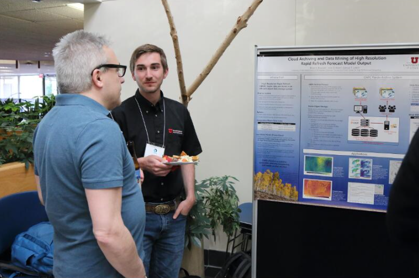

HRRR Archive at the University of Utah
Thank you for visiting this resource. With the expanded availability of archived HRRR grib2-formatted data now courtesy of NOAA and the Registry of Open Data on AWS, this archive hosted at the University of Utah is now being reduced. Users interested in the grib2 format are encouraged to switch to using the AWS archive, or a similar archive operated within the Google Cloud.
For users interested in subsets of HRRR data, our research group is now supporting a parallel archive in Zarr format. This new Zarr archive is also hosted by the Registry of Open Data on AWS.
Frequently Asked Questions
About the HRRR archive
What is this HRRR archive?
This HRRR archive is a collection of output from NCEP's High Resolution Rapid Refresh model. This is a model developed by NOAA ESRL and is run operationally every hour at NCEP's Environmental Modeling Center.
The operational HRRR generates hourly forecasts gridded at 3 km for 18 hours over the contiguous United States making it the highest spatial and temporal resolution forecast system run by NCEP.
HRRR Variable Details RAP/HRRR Diagnostic Details
HRRR analyses and forecasts are exceptionally valuable to the research community. For our research efforts, we maintained an archive of grib2-formatted HRRR files, which we also made accessible through this resource. With NOAA now having accessible archives of HRRR as well, our research group has now migrated to developing and supporting an archive of HRRR model data in Zarr format for research and other initiatives. This archive is supported by the Registry of Open Data on AWS, and more information on this new Zarr-formatted HRRR archive can be now be found via this resource here.
We expect to maintain some of this original grib2 archive for a period of time, but we do encourage users who are interested in the grib2 format to migrate to the cloud resources now supported by NOAA.
What files are contained in the remaining HRRR archive at the University of Utah?
Output files, in GRIB2 format, contained in the archive include:
- sfc: Surface fields for analyses and forecasts
- File format: hrrr.t[00-23]z.wrfsfcf[00-18].grib2
- File size: ~120 MB
- prs: Pressure fields for analyses
- File format: hrrr.t[00-23]z.wrfprsf00.grib2
- File size: ~380 MB
bufr: Vertical profiles available for KSLC, KODG, and KPVU- File format: [KSLC,KODG,KPVU]_[YYYYMMDDHH].buf
- File size: ~75 KB
- sfc: Surface fields for analyses
- File format: hrrr.t[00-23]z.wrfsfcf00.grib2
- File size: ~120 MB
Note: Not all hours are available for the experimental runs.
Became operational after July 12, 2018.
- sfc: Surface fields for analyses and forecast hours
- File format: hrrr.t[00,03,06,09,12,15,18,21]z.wrfsfcf[00-36].grib2
- File size: ~100 MB
- prs: Pressure fields for analyses
- File format: hrrr.t[00,03,06,09,12,15,18,21]z.wrfprsf00.grib2
- File size: ~205 MB
Note: Not all hours are available for the experimental runs.
Note: Some days and hours in our archive may not be available. Either the forecast wasn't run that hour (typical for the experimental models), or our download scripts failed to download everything.
What are GRIB2 files?
GRIB2, or Gridded Binary Version 2, is a standard file format used by meteorologists for model data sets. There are several useful tools for working with the data.
- wgrib2: a command line utility used to read GRIB2 files.
- pygrib: a Python module used to read GRIB2 files.
- cfgrib: a new Python module used to read GRIB2 files (version > 0.9.7 works with HRRR data). Works on Windows 😎
- IDV: a desktop application that can view many types of weather data.
- NOAA Toolkit: graphical software that can read and visualize GRIB2 files. I highly recommend this tool if you haven't used GRIB2 files before.
Where do the HRRR output files come from?
The operational HRRR (hrrr) and HRRR Alaska (hrrrak) is downloaded via HTTP from the NOMADS server.
Experimental HRRR (hrrrX) is downloaded via FTP from NOAA ESRL (credentials required).
HRRR Version Information
HRRRv1 was the operational model prior to August 23, 2016.
HRRRv2 was implemented at NCEP on August 23, 2016 beginning with the 12z run. We download the operational version from NOMADS. For more details on the HRRRv2 implementation, read the announcement
HRRRv3 was implemented at NCEP on July 12, 2018 beginning with the 12z run. Version 3 extends the forecast period for the 00, 06, 12, and 18 run out to 36 hours, but we have decided not to archive the f19-f36 files. Improvements in version 3 include updated Thompson microphysics, improved MYNN PBL scheme, updated land surface model with 15 second MODIS data, refined roughness lengths for certain land use types, and additional improvements in assimilation methods including lightning, radar radial velocity, and TAMDAR.
HRRRv4 was implemented at NCEP on Dec 2, 2020 beginning with the 12z run. This version makes more use of ensemble modeling methods and many improvements to model physics. Check out the Official HRRR Webpage for more information. Key upgrades include:
- Forecasts for the 00/06/12/18z are made out to 48 hours
- MYNN PBL update for better sub-grid clouds
- Aerosols sources/sinks
- Improved Land surface
- Assimilate GOES-16 Radiances and Motion Vectors and VIIRS/MODIS fire radiative power
- Ensemble 3km data assimilation
- Addition of smoke forecast variables (more information on these are available via this guide)
HRRR Archive Project History
This HRRR archive at the University of Utah was managed by Brian Blaylock and the MesoWest group on resources at Utah's Center for High Performance Computing.

Why did we archive the HRRR?
When this project began, there was no official HRRR archive that was publicly and easily available, to our knowledge.
This HRRR archive had been created to support various research endeavors in the Department of Atmospheric Sciences at the University of Utah. Things we do include:
- Initialize the Weather Research and Forecast (WRF) model with HRRR analyses as initial and boundary conditions. More info here.
- Model verification, where HRRR analyses and forecasts are compared to observed conditions.
- Retrospective analysis of high-impact weather events.
- Basic statistics of variables (max, min, mean, percentiles).
- Potential work with machine learning applications.
Where is the remaining HRRR archive at the University of Utah?
The remaining archive is physically located at the University of Utah Downtown Data Center in Salt Lake City, Utah. It is hosted on Utah's Center for High Performance Computing Pando archive storage system.
This object storage system is similar to Amazon's S3 storage Pando Archive Usage
What is the Pando archive?
Pando is a colony of quaking aspen trees in southern Utah, thought to be the oldest and largest living organism in the world, linked together by the same root system. According to Wikipedia, Pando is Latin for "I spread". The name is fitting for the CHPC object storage system because of its resilience and scalability, like the tree system.
The underlying software running Pando is Ceph, a project supported by RedHat. While Ceph can be configured in a few ways, in this archive Ceph manages the data objects with the Amazon S3 API. It is a separate "island" from the rest of CHPC file system so that output from other programs cannot write directly to it. Instead, files are copied to Pando through utilities like rclone or s3cmd.
Pando is built in three parts. All of these can be scaled to meet needs of the growing archive.
- 9 OSD Servers (16 8TB drives, each) - These contain the data objects.
- 3 Monitors - Monitors keep a map of the data objects. When a request for data is made, these monitors are contacted for the object map and return the object's ID.
- 1 RADOS Gateway node - You, as the client, make requests through this gateway for data downloads.

Adapted from Sam Liston
Gallery
Herbie
Herbie is a python package to download GRIB2 model data from NOAA Big Data Program partners, like downloading HRRR data from AWS, GCP, or Pando.

Online Tools
HRRR Statistics with Open Science Grid
I'm using the Open Science Grid to calculate long term statistics, calculated for +/- 15 days for every hour of the day for all the HRRR files in our archive. I calculate the following percentiles [0,1,2,3,4,5,10,25,33,50,66,75,90,95,96,97,98,99,100].


The HRRR analyses mean winds are comparable with the results of James et al. 2017.
Plot HRRR Data with Python
A handy-dandy Jupyter Notebook for making various maps.
Also, a notebook on overlaying GOES-16 images with HRRR data.
Overlaying HRRR and #GOES16 data in Python pic.twitter.com/wYY4TaxWpQ
— Brian Blaylock (@blaylockbk) September 22, 2017
Initialize WRF
I use the HRRR analyses to initialize WRF's boundary and initial conditions. Check out my instructions for initializing WRF with the HRRR here: https://home.chpc.utah.edu/~u0553130/Brian_Blaylock/hrrr.html
2017 Solar Eclipse
Solar radiation from @mesowestutah, operational HRRR, and experimental HRRR during #Eclipse2017 Thanks, @NOAA_ESRL pic.twitter.com/hHoBNWVW2m
— Brian Blaylock (@blaylockbk) August 22, 2017
Model Verification
2-day Time Series: Time series graphs of observed values for select MesoWest stations and HRRR values for f00, f06, f12, and f18 for the last two days. Check out the HRRR Point Forecasts page, and select the clock next to a station to view verification of the HRRR model for the last two days.

"Hovmoller" Diagram: Imagine a Hovmoller diagram with forecast hour on the y-axis and valid time on the x-axis. These are created for a variable over each HRRR forecast hour and compare with the observed value. On the HRRR Point Forecasts page, select the clock next to a station and click "Hovmoller". GitHub Code


Quantify inversion strength during the Utah Fine Particulate Air Quality Study, January 2017.
New England Snow Storm, March 13-14 2017
Great Salt Lake surface temperature (before HRRR assimilation was fixed)
Other People
Matt Lammers from NASA combined HRRR 925 mb winds with GMI and IMERG precipitation data for visualization of Hurricanes.